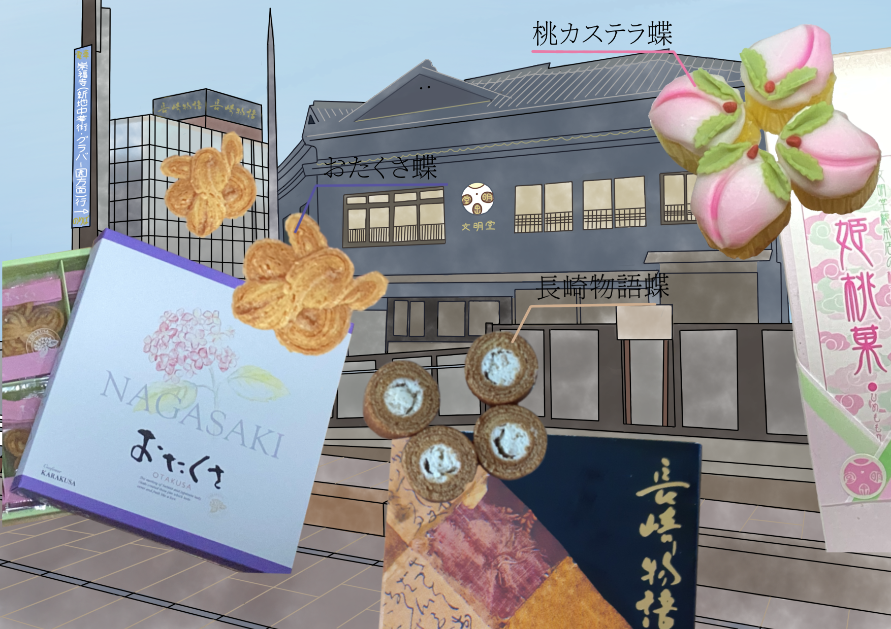

デジタル
蝶課題
制作期間
約3ヶ月
作品について
高校の授業で、自分が気になったものなどをテーマに、蝶の形になぞらえてデザインした作品です。
使用ツール
アイビスペイント
制作の流れ

蝶に似ているモチーフを考えたときに、一番最初におたくさが思い浮かんだことを
きっかけに、長崎に生息している名物をテーマに蝶の形になぞらえてデザインを
しました。
デジタル
約3ヶ月
高校の授業で、自分が気になったものなどをテーマに、蝶の形になぞらえてデザインした作品です。
アイビスペイント

蝶に似ているモチーフを考えたときに、一番最初におたくさが思い浮かんだことを
きっかけに、長崎に生息している名物をテーマに蝶の形になぞらえてデザインを
しました。